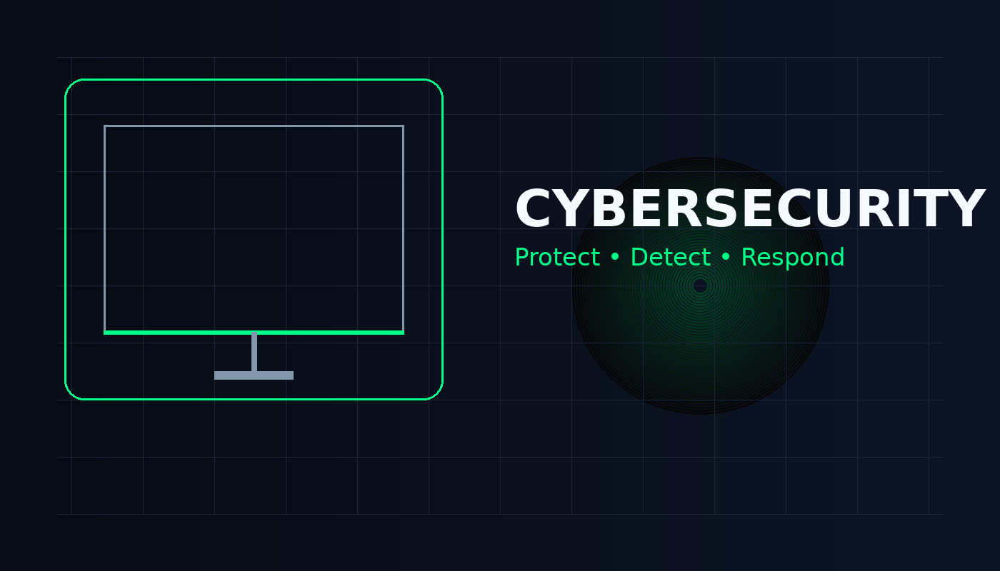

Phishing
Phishing menggunakan pesan atau halaman palsu untuk membuat korban memberikan informasi tertentu.
Pelajari dasar keamanan siber, ancaman digital, CIA Triad, dan kebiasaan untuk menjaga keamanan akun serta data.

Cybersecurity atau keamanan siber adalah upaya melindungi sistem, jaringan, perangkat, aplikasi, dan data dari akses atau tindakan yang tidak diinginkan.
Pengguna biasa juga dapat menghadapi risiko seperti pencurian akun, phishing, malware, penipuan, dan kebocoran informasi pribadi.
Phishing menggunakan pesan atau halaman palsu untuk membuat korban memberikan informasi tertentu.
Malware adalah perangkat lunak berbahaya yang dapat melakukan tindakan yang tidak diinginkan.
Ransomware dapat membuat data tidak dapat digunakan dan meminta tindakan tertentu dari korban.
DDoS membanjiri suatu layanan dengan permintaan dalam jumlah besar sehingga layanan dapat terganggu.
CIA Triad merupakan konsep dasar dalam keamanan informasi.
Menjaga agar informasi hanya dapat diakses oleh pihak yang memiliki izin.
Menjaga agar data tetap akurat dan tidak diubah oleh pihak yang tidak berwenang.
Memastikan sistem dan informasi tersedia ketika dibutuhkan.
Password yang kuat penting, tetapi keamanan akun juga membutuhkan MFA, kewaspadaan terhadap phishing, dan update software.
Jangan langsung membukanya. Periksa pengirim, alamat tujuan, dan konteks pesan terlebih dahulu.